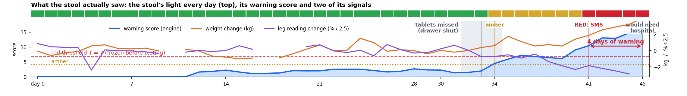

Who uses it, when, for how long, and why they keep using it for months. Every light, score and reason below is the real
output of our frozen engine on synthetic patient P0189 from the held-out test set. The people are fictional; no human data was collected.
90 sa day for Ramesh, sitting down
0reading, typing, apps or charging for him
4 daysof warning for him (median 3 on test patients)
₹4,820home unit parts, under the ₹5,000 limit
Ramesh, 62 · the patient
Heart failure, home after a hospital stay. Retired farmer, speaks Hindi, reads little, no smartphone.
90 s a day · about 45 min a month
Sunita · family member 1
His daughter-in-law. Gets the stool's SMS on a basic phone; replies 1 / 2 / 3 or a missed call.
a few seconds, only when it matters
Kamla · ASHA worker
Sets up the stool, gets a one-line Sunday SMS per patient, visits on red. Fits the home visits she already makes.
10 min once · then on red alerts
Dr. Meena · PHC doctor
Writes his amber / red plan once; it lives on the stool. Called only if nobody has examined him within 6 hours.
5 min once · rare calls
1
Day 0 · back home
once · 10 min, by the ASHA
Dr. Meena writes his plan; it lives on the stool and is spoken in Hindi. Kamla places the stool beside his charpai, enrols him in one sitting and puts the Kavach amulet on a cord around his neck.
2
Every morning, after tea
90 seconds
नमस्ते। स्टूल पर बैठिए और स्थिर रहिए।
क्या आज साँस ज़्यादा फूली? हाँ लाल · नहीं हरा
Weight, leg and chest fluid through 8 electrodes at 3 frequencies, finger pulse and SpO₂, stand-up time, and 3 spoken yes/no questions on two big buttons. Green light: "सब ठीक है".
3
Every night, asleep
0 seconds
The amulet counts night breathing and sitting up to breathe (lying flat gets hard as fluid builds), detects a fall, and has an SOS button. It hands the night's summary to the stool by Bluetooth.
4
Every Sunday
6-minute walk
HridayMitra weekly P001: 7/7 check-ins, lights GGGGGGG, usual weight 64.9 kg, 6-min walk 540 steps ~270 m
The stool asks for a 6-minute walk; the amulet counts the steps itself, with no button to press. Kamla gets one line per patient every Sunday, so she knows who to visit first.
5
Days 32-34 · tablets missed
drawer stayed shut
इस हफ्ते दवा छूटी। दवा दराज़ में रखिए…
A microswitch in the tablet drawer records whether it opened (real data for P0189: missed on days 32, 33, 34). The stool's coaching tip: keep the tablets in the drawer and take them after the check-in.
6
Day 34 · AMBER
score 4.5 · amber at 4.2
कुछ बदलाव दिखे। कल फिर जाँच कीजिए।
Nothing urgent yet: check again tomorrow and follow the doctor's amber plan (cut salt). No SMS on a single amber, so the family isn't bothered. The 3-frequency index shows fluid outside the cells before the weight moves.
7
Day 41 · RED
score 10.4 · red at 7.0
HridayMitra RED P001. Why: leg reading −5 %; weight +1.3 kg; night breathing +1.4 per min. Reply 1 checking, 2 help, 3 fine. Breathless at rest: call 108. Not a diagnosis.
Red needs two independent kinds of evidence (fluid + heart-lungs here), so one wrong button can't raise it. Every SMS says why, fits one 160-character message and always keeps the 108 line.
8
Day 41 · the care loop
hours, not days
The extra water tablet in his plan starts 4 days before he would have needed hospital care. In our care-loop simulation, 92 % of red alerts got a clinical review before the hospital visit, against 27 % with a single SMS.

Synthetic patient P0189, held-out test set, frozen engine v3 (T 7.0, chosen on training patients only). All 60 test patients: 66 % caught, 98.7 % of normal days quiet, median 3 days of warning, 0.06 false alerts per patient-month.
When things go wrong
Power cutRuns on its battery; SMS wait in a queue.
No networkLight and voice still work; SMS retried every 10 min.
Guest sits downWeight and legs don't match him: nothing saved.
Foot off a plate"Your left foot is not touching its plate", then re-measured.
Fever, not fluidPulse up, fluid steady: "maybe an infection, see the doctor".
Skipped a dayNo check-in by 11 am: reminder SMS to the family.
Pacemaker / ICDNever on the plates: weight-only mode.
Why Ramesh is still using it in month 6
the PS asks: why will they keep using it for months?
HABIT
Tied to tea and tablets
Same seat, same time, right next to the tablet drawer. A habit he already has, not a new one.
EFFORT
90 s, sitting down
No patch on the skin, nothing to read, type, pair or charge. The stool charges itself overnight on CHARGE.
TRUST
Learns his normal
Compared only with his own days 35 to 7 ago. 0.06 false alerts a month, so nobody learns to ignore it.
CARE
It talks back
Hindi voice, his doctor's words, tips on salt and tablets, and a green "सब ठीक है" most days.
ASHA
Fits her rounds
Sunday summary + red alerts tell Kamla whom to visit first: less guessing, same visits.
FAMILY
Peace of mind
Sunita hears only when it matters, with the reason. The Saathi app shows the month for whoever wants more.